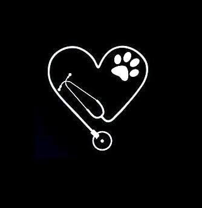

Career

As an animal lover I've always known I'd have a career in the veterinary field. In 2016 I graduated from Bel-Rea Veterinary Technology school with an AS and a license to practice. For the past six years I've been working as a emergency and critical certified veterinary technician in a large scale ER/specialty hospital. We see an array of pets including small, pocket critters. It's been incredibly fulfilling, but I'm excited to start anew and transition into a career in tech. Ultimately I'd like to apply my knowledge of the vet field to my new career in tech in a way that could benefit pet owners and companies alike.